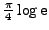

If no coincidence in a comparison dataset is detected for a given target frequency, i.e., if CINDERELLA does not find a valid candidate for this target frequency, a default value is used for the sig in the comparison dataset. The user may specify this CINDERELLA threshold by means of the keyword defsig in the .cnd file. The same specification may be set for the default csig using the keyword defcsig. If one of these keywords is not provided,
using the keyword defcsig. If one of these keywords is not provided,
 is used correspondingly by default. According to Reegen (2007), this is the expected value of the sig for white noise. The underlying assumption is that the residuals after prewhitening of all significant signal components in the comparison dataset represent pure noise, i.e. do not contain any further unresolved signal.
is used correspondingly by default. According to Reegen (2007), this is the expected value of the sig for white noise. The underlying assumption is that the residuals after prewhitening of all significant signal components in the comparison dataset represent pure noise, i.e. do not contain any further unresolved signal.
Example. The sample cand contains the same input as CinderellaNative (p. ), and the file cand.cnd contains the two lines
), and the file cand.cnd contains the two lines
defsig 0
defcsig 1
The second row in the output file 000001.cd.000000.dat of the project CinderellaNative
30.7091991449662061 3.8506295783390758 3.6090130812823817
using the default sig and csig threshold , because the comparison dataset does not contain a coincident signal component. The second row in the corresponding file of the project cand is
30.7091991449662061 4.1917236667995361 2.9501071697428420
Since the default sig is lower in the project cand, the resulting conditional sig is higher. On the other hand, the default csig is higher, which causes the resulting conditional csig to drop down.


Next: Amplitude transformation
Up: Candidate selection
Previous: Frequency resolution
Contents
Piet Reegen
2009-09-23